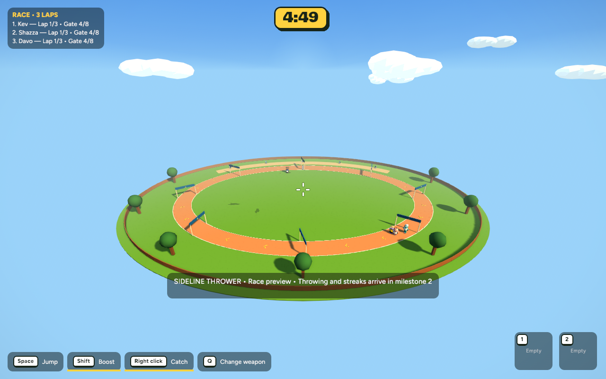
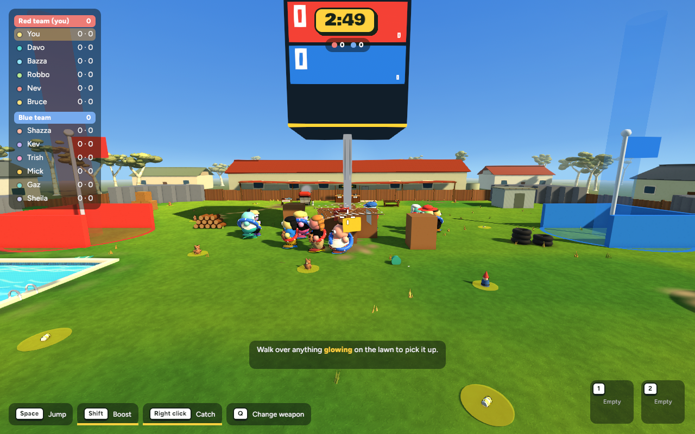
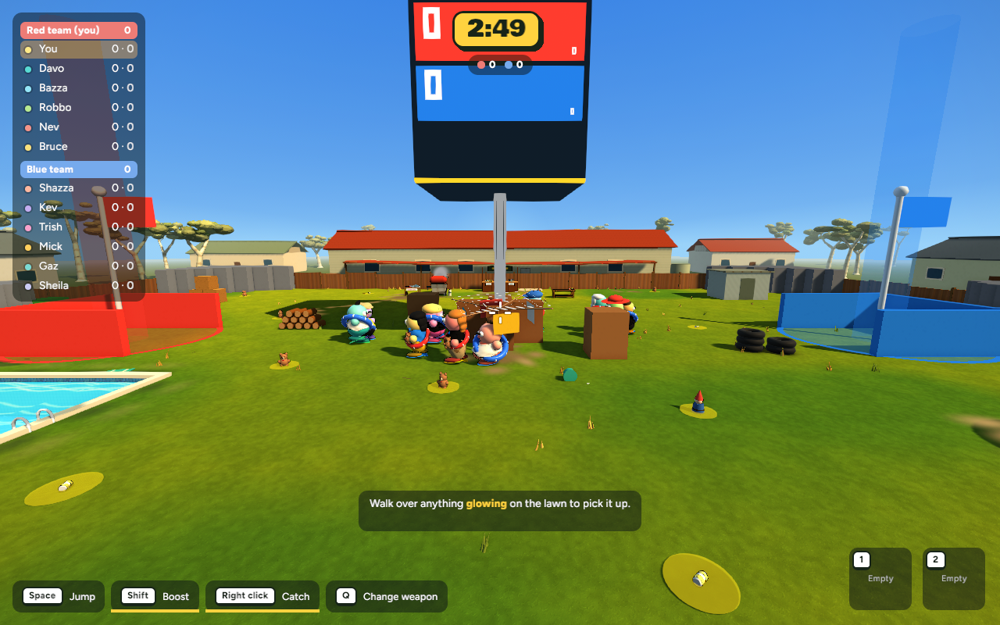
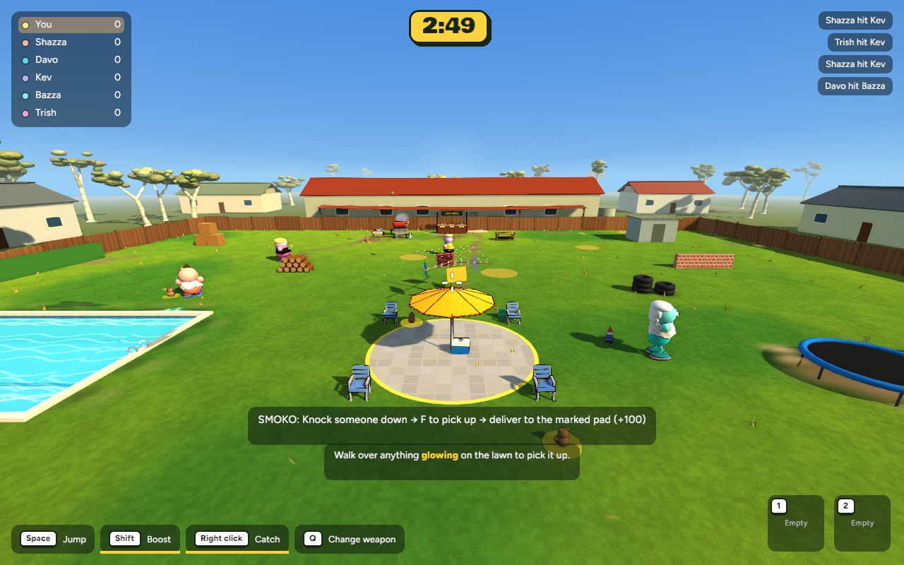
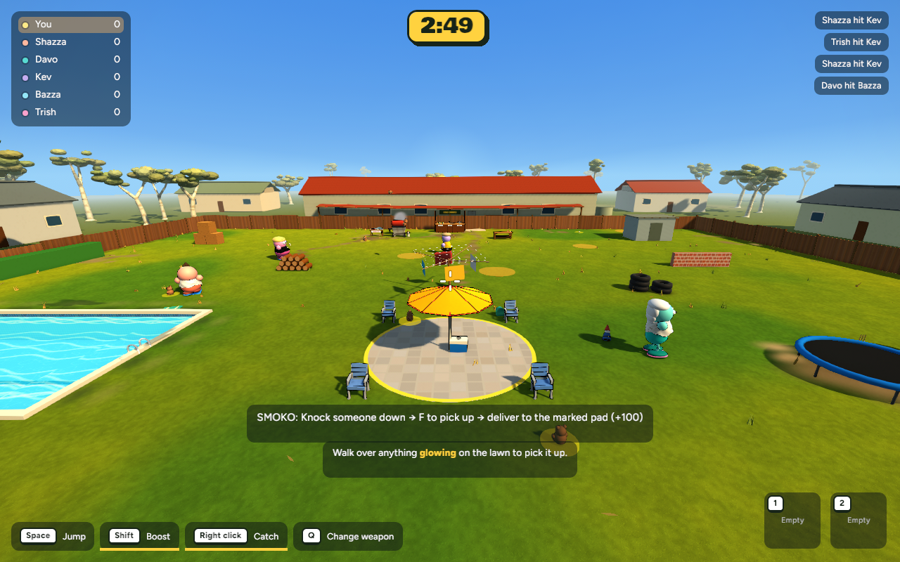

Race
BeforeAfter


Actual running game · 17 October 2026 · Ready for review
Warmer lower sunlight, brighter shadow fill, gentler colour grading and a fresher matte lawn. The race oval now uses the existing grass texture. This is a restrained implementation pass; the concept’s dense grass and detailed foliage are not implemented.
Move each slider to compare. Left is the saved original; right is the update. Same scene, camera, resolution and capture frame. Live bots and effects can vary slightly.





| Scene | Before | After | Frame-time change |
|---|---|---|---|
| Backyard / Heist | 8.40 ms | 8.10 ms | -3.7% |
| Smoko | 7.96 ms | 8.03 ms | +1.0% |
| Race | 6.11 ms | 6.17 ms | +1.1% |
600 wall-clock frame intervals per view, 1280×800, fixed 60 Hz simulation, uncapped presentation. No material regression observed. These are local samples, not GPU timings; small differences include normal run-to-run variation. Texture memory and loaded mesh/material counts unchanged. One transient entity differs in the live Heist scene.
The original source files and a verified selective revert are saved. Checkpoint and recovery instructions. Nothing committed or pushed.